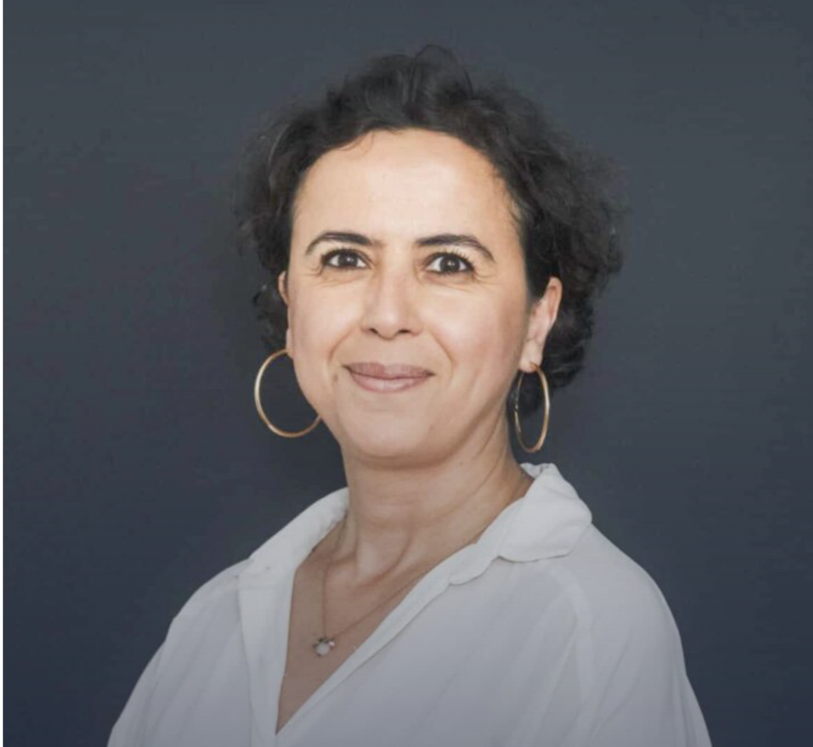

Une équipe d’experts au cœur de l’innovation
Les enseignants du département Informatique de l’EFREI accompagnent les étudiants dans leur progression technique, scientifique et professionnelle.
Direction
Frédéric Meunier
Directeur général de l’EFREI
Il pilote la stratégie globale de l’école et son développement autour des enjeux du numérique, de l’innovation et de la formation des ingénieurs.
Équipe enseignante
Mohamed Hamidi
Enseignant-chercheur en informatique
Docteur en sécurité multimédia et vision par ordinateur. Spécialisé en IA et traitement d’image.
Cherifa Ben Khelil
Enseignante-chercheuse
Docteure en informatique (2019), spécialisée en IA et systèmes d’information. Travaux entre la Tunisie et la France.

Imène Benkermi
Enseignante
Docteure en systèmes temps réel (Rennes 1). Expérience académique et industrielle.
Nicolas Flasque
Enseignant – Ingénieur pédagogique
Docteur en informatique, expert en Python et C. Plus de 20 ans d’expérience.
Yvan Guifo Fodjo
Enseignant-chercheur
Docteur en informatique (Sorbonne). Spécialisé en modélisation et vérification.
Rado Rakotonarivo
Enseignant-chercheur
Doctorat en informatique (Université Sorbonne Paris Nord). Spécialiste en data et systèmes.
Autres enseignants du département
Le département Informatique de l’EFREI s’appuie également sur une équipe élargie d’enseignants, de chercheurs et d’intervenants professionnels.
Ces enseignants interviennent dans les différentes formations (bachelor et cycle ingénieur) et participent activement à la qualité pédagogique et à la diversité des enseignements proposés.
Pour consulter la liste complète des enseignants de l’EFREI, vous pouvez visiter la page officielle :
Voir l’ensemble de l’équipe enseignante EFREI